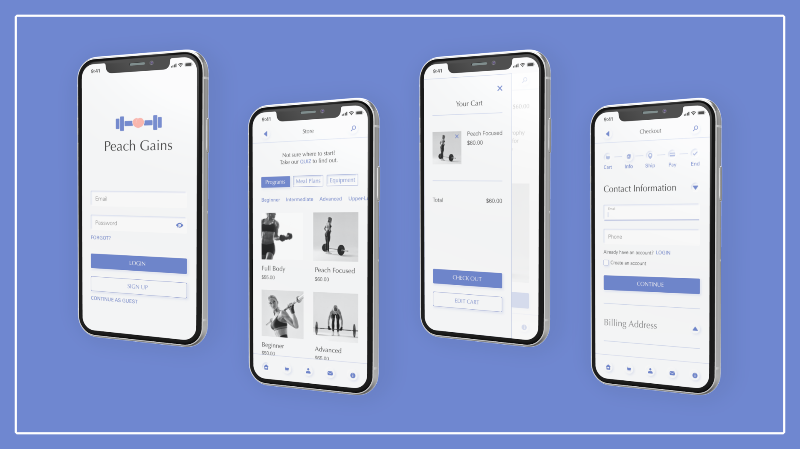
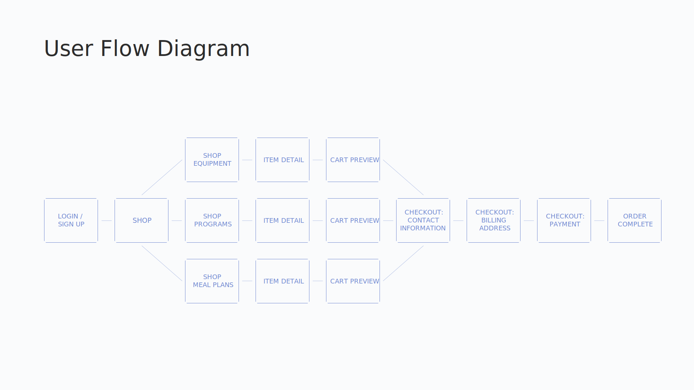

Peach Gains
This app was created as a student project for my CareerFoundry course. I independently navigated the UX and UI design processes, with some helpful guidance and feedback from my tutor, Thuraya Amin.
Brief
The student brief required that this app satisfy a few requirements:
- create an online retail store app that allows users to quickly and easily find products that meet their needs
- offer an easy-to-use, clean navigational system with filters that permit users to quickly and effeciently narrow down their product search
- this tool is particularly valuable to those who struggle to find what they need in physical stores
My Process

Research
As a lady who is always keen on feeling more lady-like, I had recently discovered a surprising method to do just that: weightlifting. After browsing the "before and after" pictures of about a million ladies that my Google search for "female body transformations from weightlifting" procured, my initial shock wore off and I began to plan how I might go about hitting the weights to build my own curves. I quickly discovered that my local options were mostly male Physical Trainers who, though qualified, didn't offer the type of tailored program I was seeking. I hopped online and found some programs geared towards building the booty, but they turned out to be very one-size-fits-all, and many required a monthly fee, and left a lot of room for guessing. I realized there was a gap. What I wanted was options that were cheaper, and offered more variety and educational content. I joined a facebook group for women who lift and soon realized my desire for more support on how to build curves was shared.
Note: there is definitely a larger availability of coaches for advanced bodybuilding women training to compete, but this focus is on your average woman hoping to feel more confident in her body, and not seeking to gain a super cut and muscular physique.
Define the Problem
This recent personal experience provided me with an excellent topic for my student project. I was excited to create a solution to the problem, and began by defining it:
- a lack of accessible Physical Trainers spefically for women with the goal of building a feminine physique (lower-body focused)
- a scarcity of affordable (one-time payment) curve-enhancing, weight-training programs tailored to everyday women
- an overabundance of cookie-cutter weightlifting programs for women, and a shortage of the ability to choose between a variety of women-specific weight training programs
Ideate
This stage consisted of lots of quick sketches, playing with colors, viewing other female fitness design styles, and having ladies in the women's weightlifting facebook group contribute their votes when I needed guidance.

Brand
I then took all of my conclusions and peiced together a Brand Guidelines document for Peach Gains.
User Flow Diagram
I constructed a User Flow Diagram off of the following user stories:
- As a customer, I want there to be more than one payment option, so that I can choose the payment method that suits me best.
- As a new customer, I want to access the inventory without having to register, so that I can make sure this store has what I am looking for before having to create an account.
Wireframes
I began designing the low- and mid-fidelity wireframes.
User Testing
Taking my mid-fidelity wireframes, I created a user test on InVision to see if any user flow improvements could be made.
View InVision test here.
Scenario
The user is a customer that wants to purchase a downloadable PDF of a Peach Gains workout program as a guest. The user navigates the app to do so, until the purchase is complete as signified by the confirmation screen.
Feedback
"I looked at your app, the flow seems perfect to me! We always said when doing website stuff at Points of Light that you want the steps between seeing a product and purchasing a product to be as short and simple as possible, and I would say yours are :)”
"Good flow, very user friendly!"
"I think it's great! Very smooth."
"I think it is good, no recommended changes."
"I went through the screens you sent, and I didn't see any issues."

Refine Design
Based on my user test results, I was ready to finalize my mobile screen designs without making changes to the user flow.

Responsive Design
I then designed the landing page for a desktop breakpoint.
Retrospective
What Worked Well
I really love the neumorphism trend, but had no idea how to create that effect. I watched a few youtube videos, and decided I felt capable of incorporating the style a little into my design. I was going for a look that felt both soft and strong, because to me that is the essence of a woman. By blending my newfound soft UI design skills with strong shapes made up of lines and blunt bevelled corners, I feel I pulled it off. I also feel that using Optima for headings contributed to the balanced contradiction of soft and strong together, with its straight lines and sharp corners, and the delicacy of its lightness.
I think that the products offered by Peach Gains answer a largely unmet need for those ladies who either do, or wish to, practice weightlifting. It is an art that has been made more accessible to the male population, and many women are not even aware that a program could be catered to fit their feminine goals. If programs like these were made more readily available, I believe that many more women would feel equipped enough to explore weightlifting and discover their strength and their peachiest self.
What I Learned
I initially designed with colors that I didn’t love, and I knew I didn’t love them, for I had tried to design with them in the past and experienced the same predicament. I felt frustrated at not being able to decide on a color palette that felt great, but did not want to spend much more time on this than I already had, so I decided to stick with “good enough.” Later when the colors had not grown on me still, I was struck with inspiration and settled on a color theme that I much preferred.
I designed the User Flow Diagram in Google Drawings at first, and was struggling with pulling off a design that felt consistent with the app design. I spent too much time trying to get it right, and eventually decided to create the User Flow Diagram in Adobe XD, as this was the design tool I had used for the app. That was much more time efficient.
My takeaway from both of these obstacles was to trust my gut more in the future. When I feel like something really isn’t working, instead of continuing to try to cram a square peg into a round hole, I will take another route and save valuable time. If need be, I can always set it aside and move onto other steps, then return to it later when the inspiration strikes.